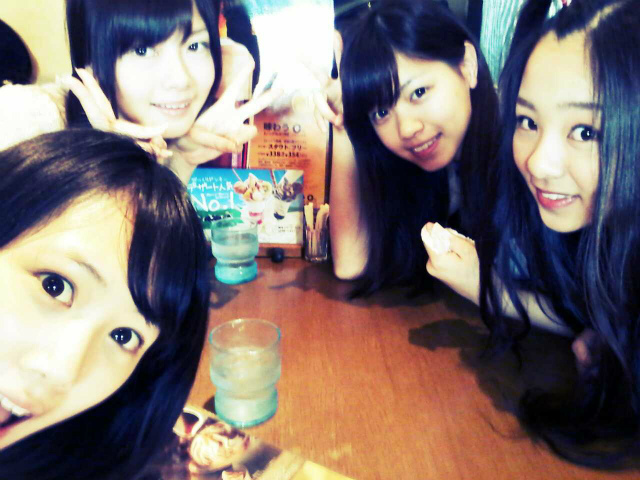

ほいっ♪
ろってぃーでーす,
今日ねっ★☆★
ぢゃぢゃーーーん )))

まいやん♪
せいらりん♪
ななせ♪
まひろ♪で
お昼,
ハンバーグを食べに
行ってきましたぁ〜^ω^
すっっごい
美味しかった(ο^~^ο)
そいでっ,
色々とありまして
楽しかったんですっ´ω｀ににっ♪
あんねっ、
食後のデザートに
パフェ♪食べよっ(*^^*)
ってなって
メニューを見たら
パフェが4種類あって,
ななせは、莓系ので
せいらりんは、抹茶系
ぢゃあ
まいやんが、
ぢゃあこっち!ってゆうて
ショコラ系のを
選んだから
もうここは残りの
珈琲ゼリー系の
いくしかω・´ってなって
4人とも違うパフェを
頼むことになって、
かっこいいねっ*・ω・*笑
って盛り上がって、
ぢゃあジャンケンで
負けた人、罰ゲーム(>ω<)☆
とかなって、
定員さん呼んで、
真顔で定員さんの目見て
かっこつけて
「これ,全部１つずつ
ください。」
ってゆってって
言われて
皆「えw>ω<いややぁぁ」
ゆうてジャンケンしたら
まいやん
せいらりん
ななせ、グー
まひろ、チョキ。
.....
負けた。=ε=
ブー。
約束通り、
ボタンを押すと
定員さんがやってきました。
皆の顔を見ると
めっちゃ
笑うんこらえてるやん・ω・笑
ぶひっ))
で、ちゃんと
かっこよくきめましたっ^ω^
まひろ
「あの、これ全部１つずつで。」
....
定員さん
「えっ...」
動揺してました>_<))
まったくんっ^_^
こんな罰ゲームで
楽しむ乃木坂46.
でしたっ(*^^*)
そな後は、
ちょっとお散歩したり
しました(*^^*)
楽しかった(⌒‐⌒)
また行こうねっ^^